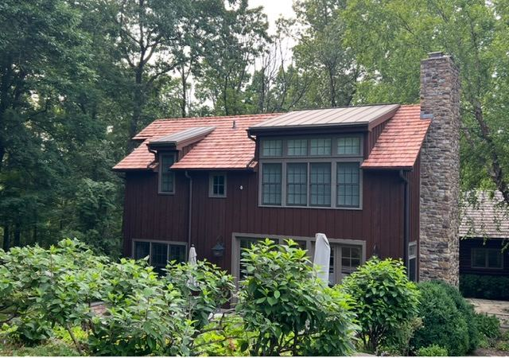
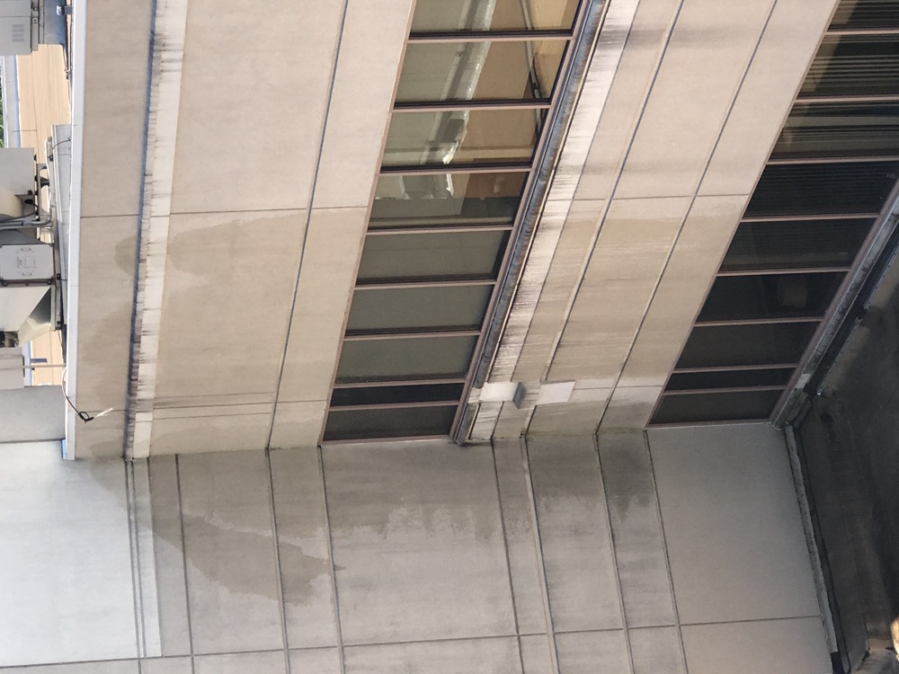
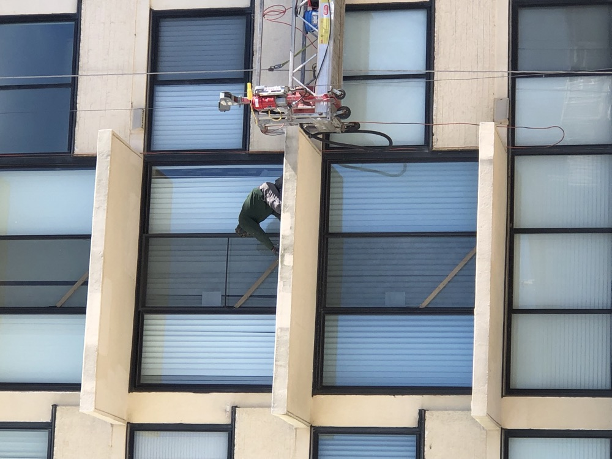

Completed roofing and facade work across PA, NJ, and DE, filterable by project type. Siding, flooring, concrete, and pavement project photos are on the way.
Cedar Shake Re-Roof, Stone TudorSlate Roof Installation, Multi-Dormer

Standing Seam Metal & Cedar Shake

Panel Joint & Sealant Inspection

Balcony Repair from Swing StageFacade Restoration, Institutional BuildingConcrete Panel Facade, Office Building